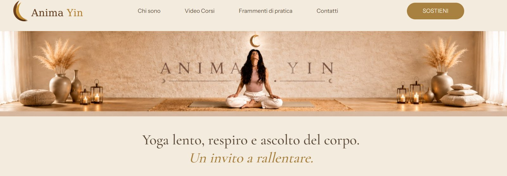
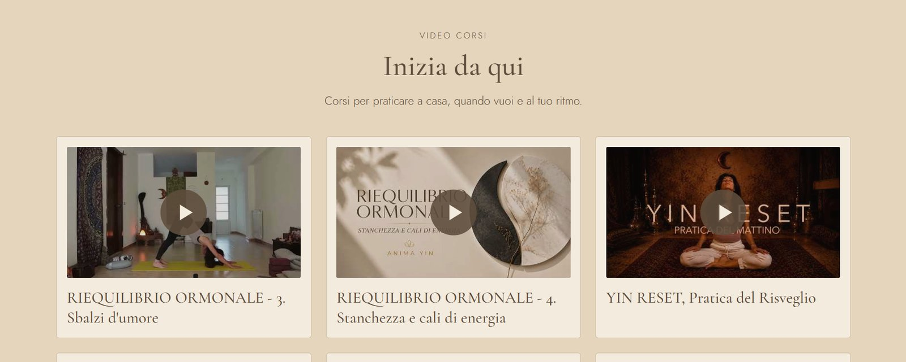
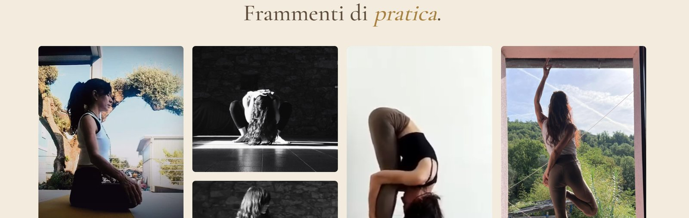

Partire da foto, video e testi già pubblicati sui social e dare loro una struttura: un sito vetrina per un progetto di Yin Yoga, con un'identità visiva unica dalla prima schermata all'ultima.
Il progetto esisteva solo sui social: fotografie, video e pratiche pubblicati nel tempo, in formati e stili diversi. Mancava un posto dove chi arriva potesse capire in pochi secondi cosa viene proposto, trovare i video e iscriversi per restare aggiornato. Non c'era un sito da migliorare: andava costruito da zero, con il materiale che c'era.



È una vetrina semplice: non ha un e-commerce e non ha strumenti di analisi collegati. Serve a presentare il progetto, mostrare i video e raccogliere le iscrizioni alla newsletter.
Quando il materiale arriva da fonti diverse, il lavoro più utile non è aggiungere altro: è decidere cosa tenere e in che ordine mostrarlo. Qui la scelta è stata togliere il superfluo e lasciare che un solo linguaggio visivo tenesse insieme foto, video e testi. È lo stesso modo di ragionare che uso sui processi aziendali: prima si guarda cosa c'è e dove nasce la confusione, poi si sceglie lo strumento.